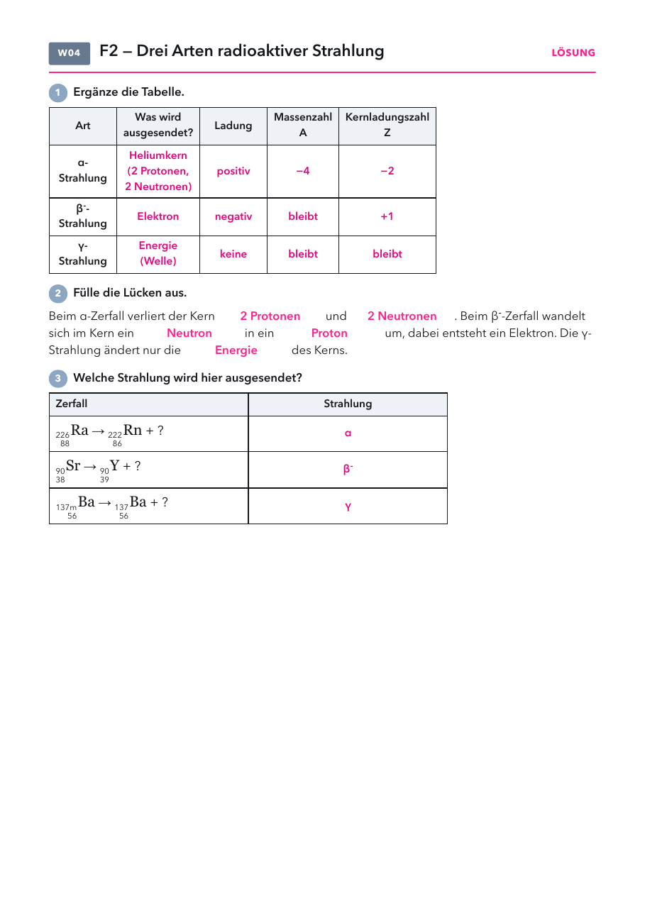

Klasse 10 · Physik · W04 (Woche ab 05.10.2026) · Leitfrage 2
| Material | Anzahl | Hinweis |
|---|---|---|
| Präparatesatz | 1 | nur Lehrkraft, nach RiSU |
| Geiger-Müller-Zählrohr mit Zählgerät | 1× |
| Material | Anzahl | Hinweis |
|---|---|---|
| Periodensystem | 1× |

| im Alltag | was man sieht | warum |
|---|---|---|
| Rauchmelder (ältere Modelle) | α-Strahler Americium-241 | Die Strahlung macht Luft leitend. Rauch stört das und löst Alarm aus. |
| Banane | β-Strahler Kalium-40 | Winzige Menge, nicht gefährlich. |
| Medizin | γ-Strahler Technetium-99m | Zeigt im Körper, wo sich ein Stoff anreichert. |
| Keller | α-Strahler Radon | Gefährlich, wenn man es einatmet. |
Präparat und Abstand, α-, β- und γ-Zerfall mit Nuklidgleichung, Ablenkung im elektrischen Feld mit Spannung an und aus.
Lösung: α: Heliumkern, positiv, schwach zum Minuspol, wenige cm. β⁻: Elektron, negativ, stark zum Pluspol, einige m. γ: Energie, keine Ladung, keine Ablenkung, sehr weit. α: A − 4, Z − 2. β⁻: A bleibt, Z + 1. γ: beide bleiben. Lücken: 2 Protonen, 2 Neutronen, Neutron, Proton, Energie. Zuordnung: α, β⁻, γ. Aufgabe 5: γ, keine Ladung, α und β würden vom Aluminium gestoppt.